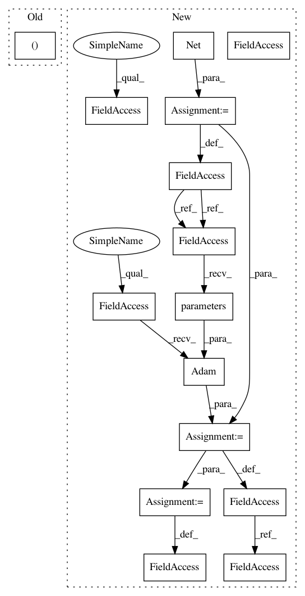

2775c15702fd52f081ff8fded51f4f38877659df,examples/_tests_scripts/z_classification.py,,,#,87
Before Change
// In[ ]:
from catalyst.dl.callbacks import InferCallback
loaders = collections.OrderedDict([("infer", loaders["train"])])
runner.infer(
model=model, loaders=loaders, callbacks=[InferCallback()], check=True
)
After Change
logdir = "./logs/cifar_simple_notebook_8"
// model, criterion, optimizer, scheduler
model = Net()
criterion = nn.CrossEntropyLoss()
optimizer = torch.optim.Adam(model.parameters())
scheduler = torch.optim.lr_scheduler.MultiStepLR(
optimizer, milestones=[3, 8], gamma=0.3
)
// model runner
runner = SupervisedRunner()
In pattern: SUPERPATTERN
Frequency: 3
Non-data size: 15
Instances
Project Name: catalyst-team/catalyst
Commit Name: 2775c15702fd52f081ff8fded51f4f38877659df
Time: 2019-08-01
Author: scitator@gmail.com
File Name: examples/_tests_scripts/z_classification.py
Class Name:
Method Name:
Project Name: rusty1s/pytorch_geometric
Commit Name: 04ad358395c7bd074ffb9af235ccb76d2c0dc4cc
Time: 2020-07-01
Author: matthias.fey@tu-dortmund.de
File Name: examples/pna.py
Class Name:
Method Name:
Project Name: Scitator/catalyst
Commit Name: 2775c15702fd52f081ff8fded51f4f38877659df
Time: 2019-08-01
Author: scitator@gmail.com
File Name: examples/_tests_scripts/z_classification.py
Class Name:
Method Name: